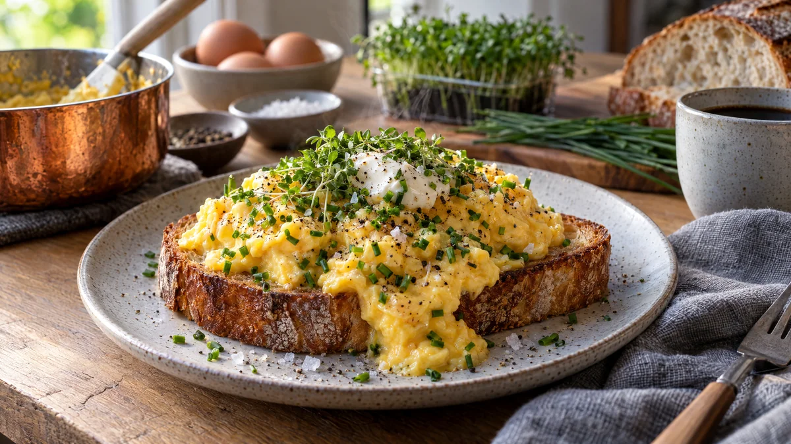

RESTFEST · RECEPTFrukost & brunch · Smörgås
Krämig äggröra på smörstekt surdeg med gräslök och krasse
Sex ägg, en klick smör och gårdagens surdegsbröd. Äggen röras långsamt på låg värme tills de blir krämiga som en sås, med mjuka, glänsande flak. De vilar på krispigt smörstekt bröd under ett täcke av gräslök och krasse. Hotellfrukost på tio minuter, för en bråkdel av priset.
- Förberedelse
- 5 min
- Tillagning
- 10 min
- Portioner
- 2
- Nivå
- Nybörjare
 Det här behöver du
Det här behöver du
JÄMFÖRT MED DIN KYL
Tryck på + vid det du behöver köpa.
Äggröra
Bröd
Till servering
Gör så här
- Knäck äggen i en skål och vispa dem lätt med saltet, bara tills gulor och vitor har blandats.
- Stek brödet i smöret i en stekpanna på medelvärme, 2–3 minuter per sida, tills det är gyllene och krispigt. Gnid ena sidan med vitlöksklyftan och lägg brödet på tallrikarna.
- Lägg hälften av det kalla smöret i en kall kastrull med tjock botten och häll i äggen. Ställ kastrullen på låg värme.
- Rör hela tiden med en slickepott, längs botten och kanterna. Efter 3–4 minuter börjar äggen tjockna. Lyft kastrullen från plattan i 10 sekunder då och då om de stelnar för snabbt. Långsam värme är hela hemligheten.
- När äggen är krämiga men fortfarande lite rinniga, efter 5–7 minuter, tar du kastrullen från värmen. Rör ner resten av smöret och grädden. Äggen fortsätter att stelna av eftervärmen.
- Smaka av med vitpeppar och lite mer salt om det behövs.
Dekoration och servering
- Skeda äggröran över brödet i en mjuk hög och låt den flyta ut lite över kanten.
- Strö generöst med gräslök och lägg en tuss krasse ovanpå.
- Avsluta med en liten klick crème fraiche, flingsalt och nymald svartpeppar.
- Servera direkt, äggröra väntar inte på någon.
- Gott med några skivor gravad lax eller morotslaxen i recept 19.
Mått och ugnstemperaturer
Måtten är svenska (dl, msk, tsk, krm). Ugnstemperaturerna gäller vanlig ugn med över- och undervärme; med varmluft, sänk med 20 grader.